GAME DEVELOPMENT
The Start Of it All
I started doing game development when I was 17 years old. It was only a small hobby at the time, but I enjoyed it nonetheless. When the global pandemic hit in 2020, I started to really explore game development. I stared out with Unity engine that uses C#, this was my first mainstream coding language that I learnt. I developed my first game in Unity in about 3 weeks. The game can be downloaded below. It's a very simple side scroller that has all the basic features of a game, none of it was revolutionary, but it was still my game.
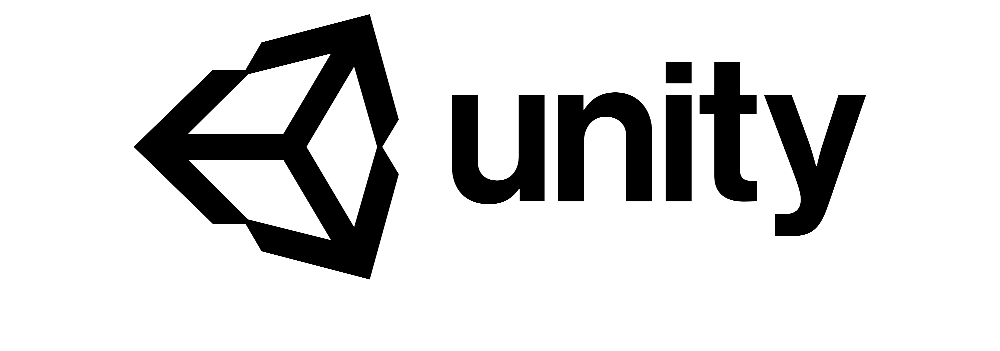
Trying New Things
I used Unity for about 7 months, and I dabbled in many projects, none of which saw the light of day but it was an amazing learning experience nonetheless, it also taught me how games were put together. Near the end of 2020 I decided to try out another game engine, Unreal Engine. This engine is used by many AAA game studios and is one of the best free to use engines. The first few months of using Unreal was very daunting because it was a much more advanced engine with a ton of advanced features and functionalities.
Present Time
I made a small project here and there in Unreal but none of them were meant to be released, it was merely to teach myself the engine and to expand my understanding of how games are constructed. I have been using Unreal since November 2020. It is the engine I plan on using in the foreseeable future, I am currently working on a project I plan to release to the public but with university I don't have a lot of free time to work on it so development is coming along very slowly. Game development is a very fun hobby but is a hard one. You need to really enjoy sitting in front of a computer for long hours, and you also need to enjoy a challenge because to get good with any engine it takes a ton of practice and trail and error.
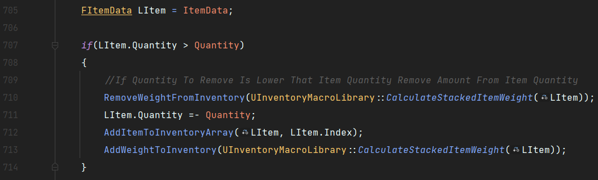
Music Production
Introduction
I have been producing music since the age of 12. I have always loved the idea of being able to make music that sounds good to me and not have to rely on others. I started off releasing mediocre music on SoundCloud, but 7 years later have managed to get my songs onto all streaming platforms. Below are my top 5 songs (in no particular order) followed by their corresponding album art.
-
Louco do Amor
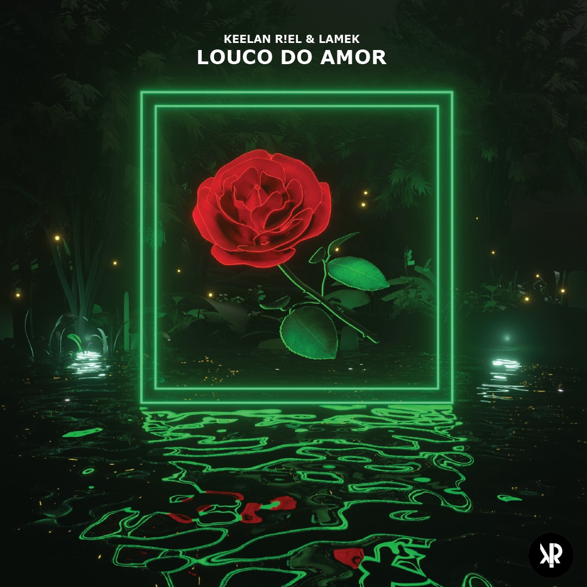
-
Sandcastles
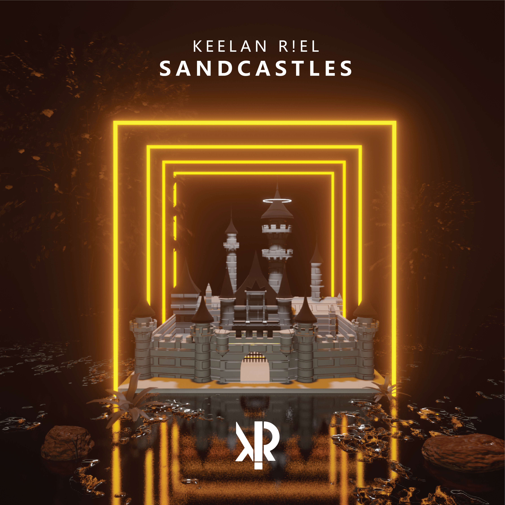
-
Dirty Dance
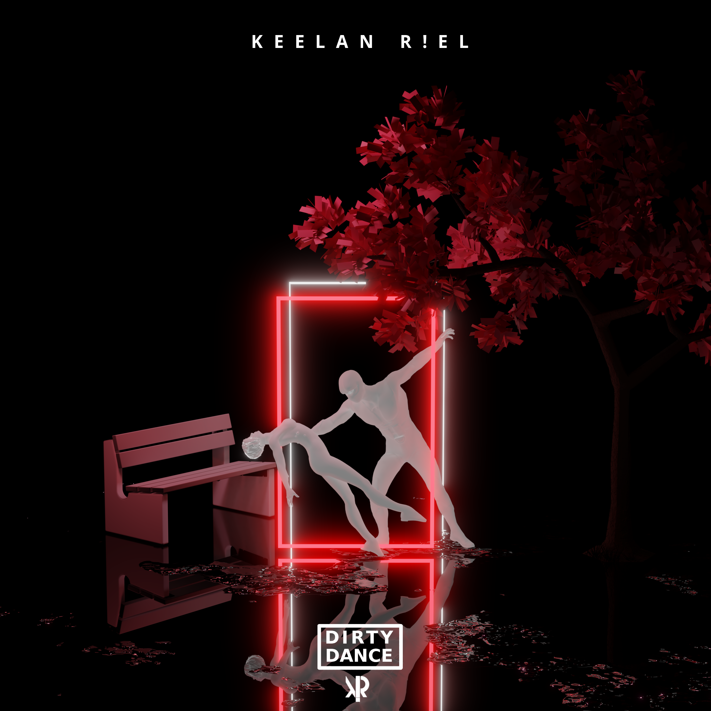
-
Fuego
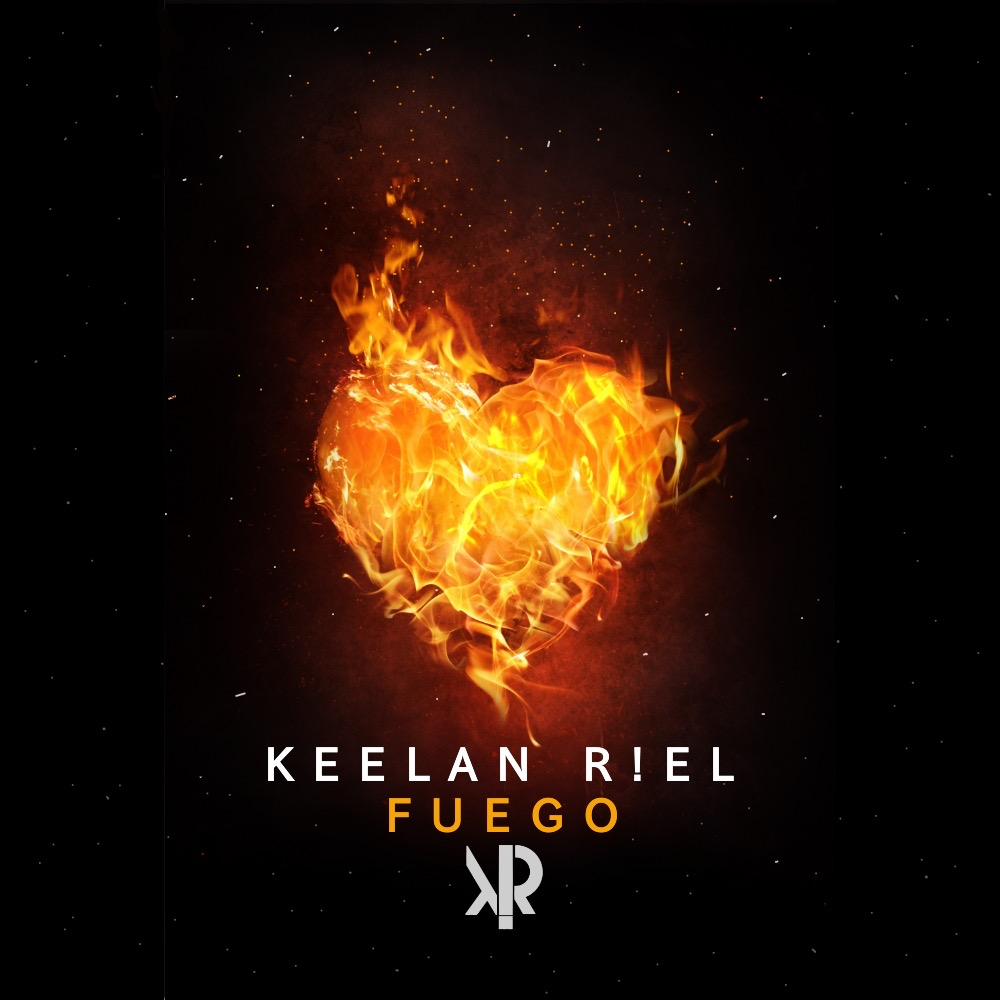
-
Never Hurt you
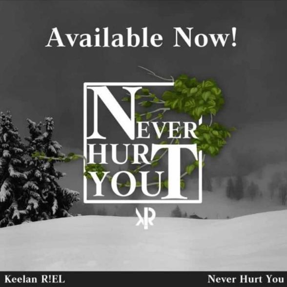
My Journey
I started out DJ'ing at the age of 9, but by the time I got to age 11 I was more interested in
learning how to make music itself, rather than just mixixng it together. I started off producing
Trap music, but quickly fell in love with House Music. I began experimenting with all kinds of
genres and settled on Brazilian Bass.
My music can be found and streamed anywhere, from SoundCloud,
to Apple Music, and I have accumulated
over 70 000 streams across all platforms and over 100 Shazams. Each album art was made in Blender
and all songs are accompanied by an audio visualiser on YouTube, made in Adobe After effects.
DUNGEONS & DRAGONS
What is Dungeons and Dragons?
Dungeons & Dragons or 'DnD' is a dynamic tabletop roleplaying game wherein a number of 'players' explore, battle and interact with a world narrated (and often created) by a dungeon master or DM. Other than the DM, who decides how the overall story progresses, every use of skill or action made by the players and other characters/creatures in the game is decided by a rolling number of sided dice, the most common being 20-sided AKA a D20. The game is usually played within a magical fantasy setting were the players, fight monsters, interact with NPCs (Non-Player Characters), explore the world and gather loot and experience to enhance their abilities and advance a story driven by both the DM's Narration and the player's decisions. Part of the beauty of DnD is that, because the game is run by a specific player (the DM), it is entirely customisable. The setting, the NPCs the characters meet, almost every aspect of the game can be decided and created by the DM. If creating an entire world and campaign setting is too much for the DM, however, There are pre-written adventures created by the makers of Dungeons & Dragons or a third-party which will include NPCs, monster encounters, maps, worlds and story etc., which the DM can then guide the players through.
My Introduction To DnD
My first experience with DnD wasn't actually with DnD itself, but a similar sci-fi tabletop RPG being played by a group of people I used to watch regularly on YouTube. Later, inspired by the other tabletop RPGs, I began watching a group play actual DnD and quickly became immersed in the world and story being created. I knew that I wanted to try play something like that myself, so I began looking up the rules of how to play and bought a beginners starter set which included a rulebook, a simple pre-written adventure and a set of dice. Seeing as I was the only person I knew at the time with any interest in DnD, it was obvious that I would have to be the DM. So, to begin with, I got my family together and ran the starter adventure with them just to get a feel for what playing and DMing was like. And, during this time, I had begun creating my very own 'homebrew' world which I dubbed 'Sillarek'. This was the world I first introduced to my friends and the setting for my first (still ongoing) campaign.
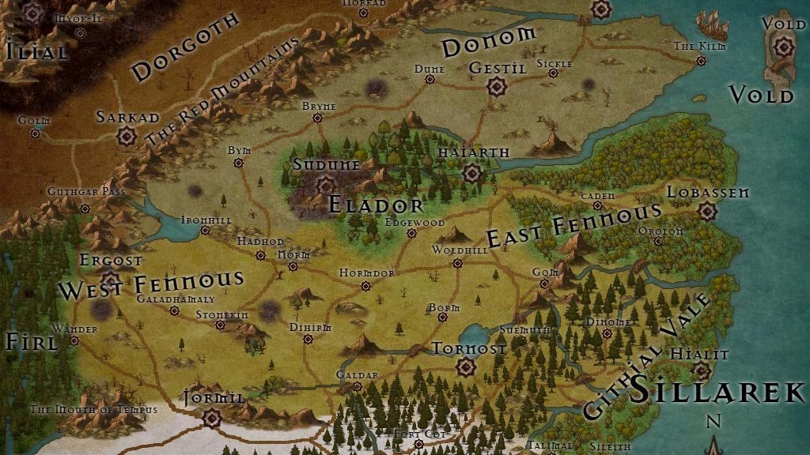
Making Stuff
Over the few years I've been playing DnD, I've collected and created a range of different things to add to the game and generally enhance the experience at the table...
Rule Books
I own three rule books. These three tend to be the most common among regular DMs:
Player's Handbook |
Monster Manual |
Dungeon Master's Guide |
|---|---|---|
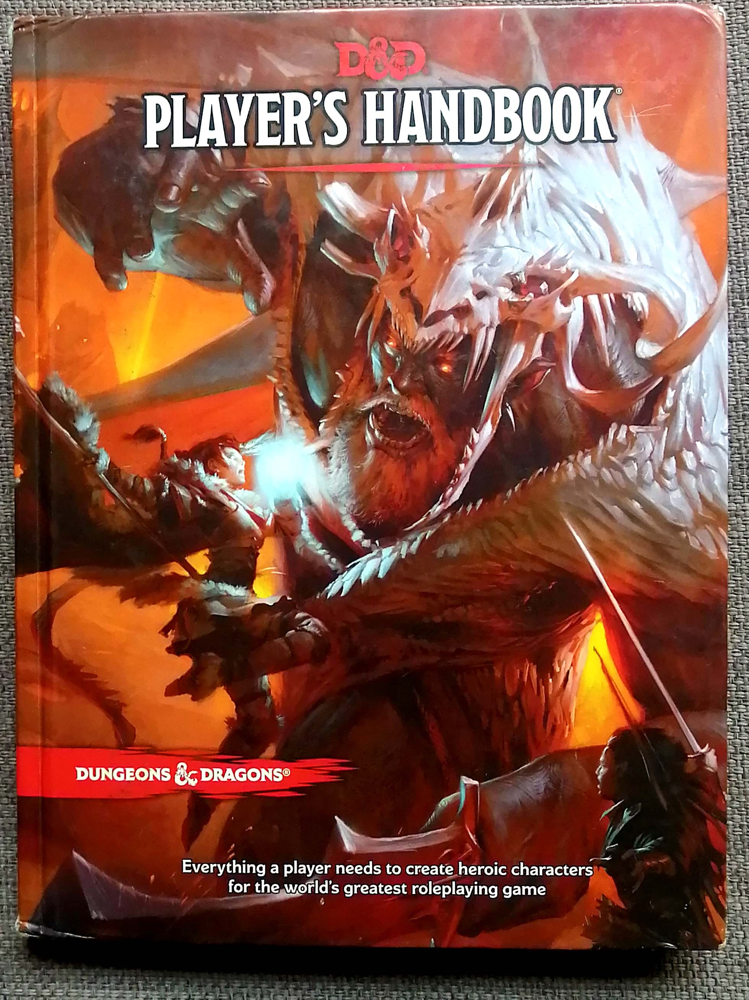 |
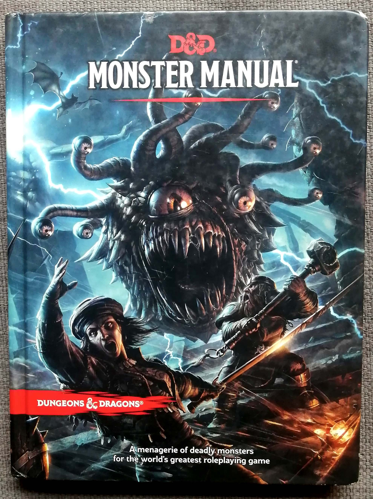 |
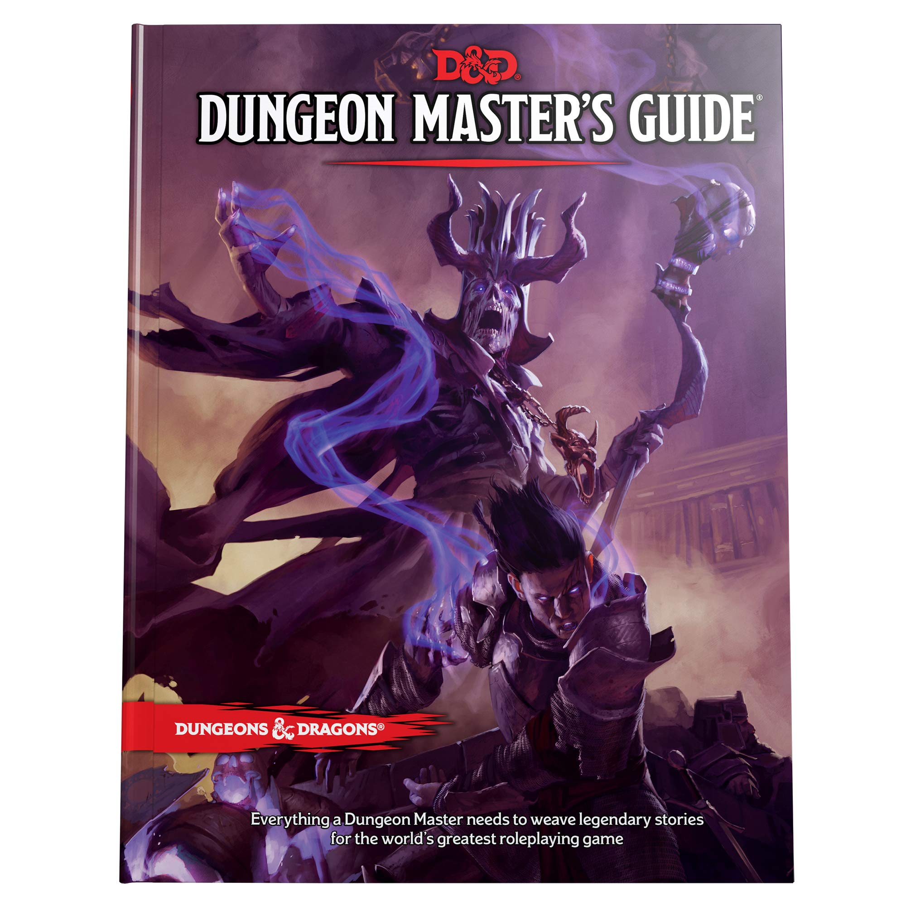 |
|
From the available character races, classes and spells to detailing how to use actions and abilities, the Player's Handbook covers everything a player needs to know about the game. |
This book contains a massive catalogue monsters, creatures and animals and their various stats, abilities and attacks etc. |
A detailed guide for DM's on how to create effective monster encounters, voice various NPCs, hand out magical items, and much more. |
Miniatures
In DnD many people use miniatures to represent their characters and monsters in-game. Each of my players had a unique bottle cap to represent their characters, but I created some monster miniatures out of pins, paper and bottle caps for them to battle.
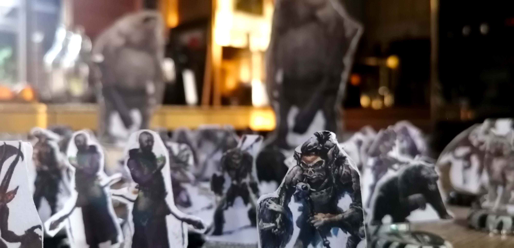
Game Table
While DnD can easily be played almost anywhere, there are custom-made tables which feature dice trays, built in screens for showing maps and immersive background images, pullout draws, and the list goes on. These tables are obviously very expensive, and significantly out of my price range, but I found a few videos online about how to create my own and was inspired.
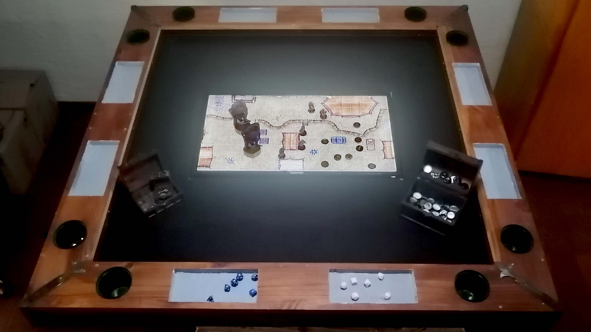